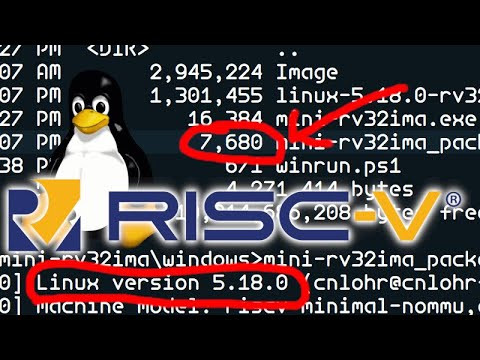
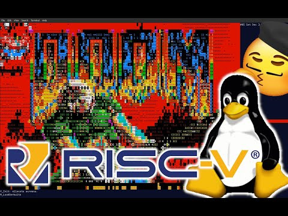
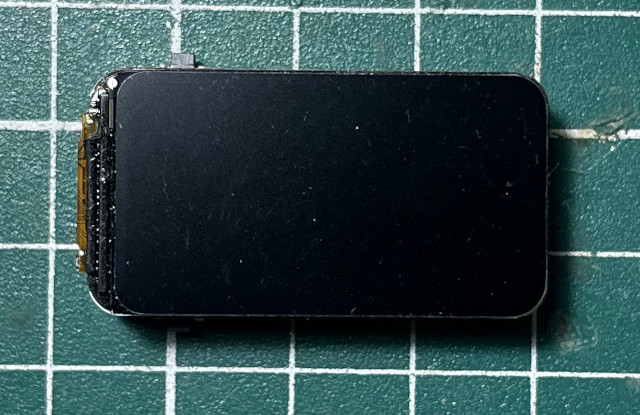
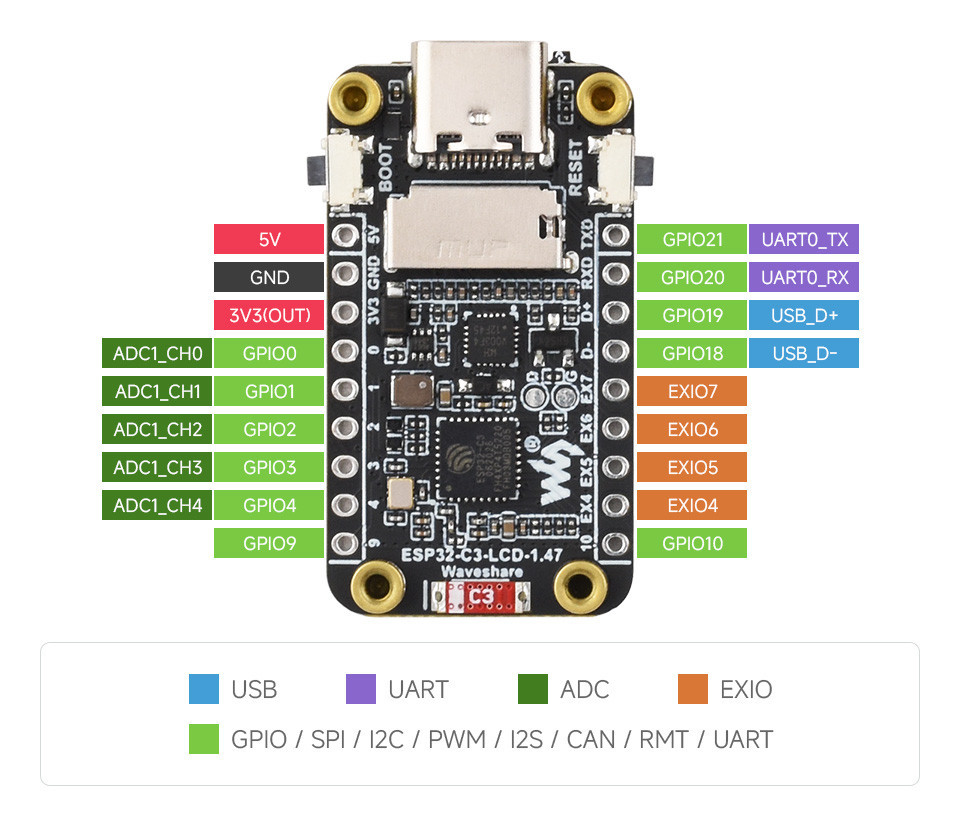
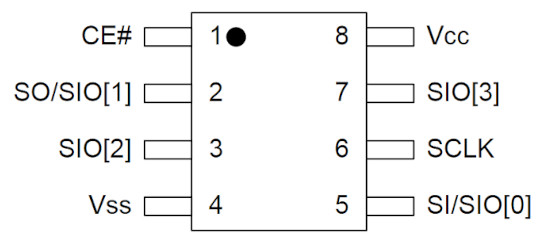
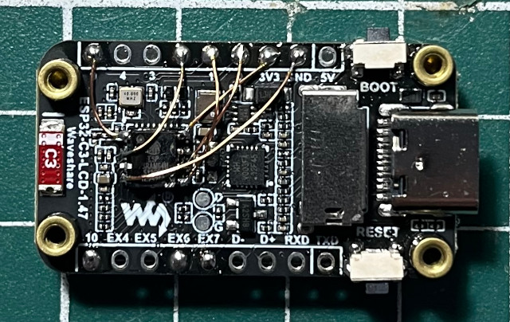

Steward
分享是一種喜悅、更是一種幸福
微處理器 - Espressif ESP32-C3 (1.47inch LCD Display) - Linux - 安裝系統
參考資訊：
https://github.com/cnlohr/mini-rv32ima
https://github.com/xhackerustc/uc-rv32ima
https://github.com/kangz543g/ESP32C3_RV32IMA_LINUX
https://docs.espressif.com/projects/esp-idf/en/stable/esp32c3/get-started/linux-macos-start-project.html#activate-using-eim-cli
一個相當吸引司徒注意的RISC-V模擬器(mini-rv32ima)


開發板

腳位

PSRAM64H腳位

焊接

司徒焊接PSRAM64H的腳位
PSRAM64H_MOSI ESP32_GPIO_1 PSRAM64H_MISO ESP32_GPIO_2 PSRAM64H_CS ESP32_GPIO_9 PSRAM64H_SCLK ESP32_GPIO_0
安裝idf工具
$ echo "deb [trusted=yes] https://dl.espressif.com/dl/eim/apt/ stable main" | sudo tee /etc/apt/sources.list.d/espressif.list $ sudo apt update $ sudo apt install eim $ eim wizard $ source ~/.espressif/tools/activate_idf_v5.3.6.sh
編譯
$ git clone https://github.com/xhackerustc/uc-rv32ima -b 3e062c59acf745b39be63b86a8e6afad71d27ce8
$ cd uc-rv32ima
$ idf.py set-target esp32c3
$ vim main/CMakeLists.txt
target_compile_options(${COMPONENT_LIB} PRIVATE -w)
$ idf.py reconfigure
$ idf.py menuconfig
Serial flasher config ---> Flash size (4 MB)
Component config → ESP System Settings → [] Enable Task Watchdog Timer
$ vim main/port-esp.c
206 psram_write(addr, dmabuf, 64);
213 psram_write(addr, dmabuf, flen);
$ vim main/port-esp.c
43 #define GPIO_MOSI 1
44 #define GPIO_MISO 2
45 #define GPIO_CS 9
46 #define GPIO_SCLK 0
47 #define SPI_HOST_ID 1
48 #define SPI_FREQ 80000000; // 80MHz
$ idf.py build
$ dtc -I dts -O dtb -o main/uc.dtb main/uc.dts
燒錄
$ idf.py -p /dev/ttyACM0 flash
$ esptool.py \
--chip esp32c3 \
-p /dev/ttyACM0 \
-b 460800 \
write_flash \
0x10000 build/uc-rv32ima.bin \
0x8000 build/partition_table/partition-table.bin \
0x200000 main/Image \
0x3ff000 main/uc.dtb
完成 ($ idf.py -p /dev/ttyACM0 monitor)
Executing action: monitor
Running idf_monitor in directory /home/steward/Downloads/uc-rv32ima
Executing "/home/steward/.espressif/tools/python/v5.3.6/venv/bin/python /home/steward/.espressif/v5.3.6/esp-idf/tools/idf_monitor.py -p /dev/ttyACM0 -b 115200 --toolchain-prefix riscv32-esp-elf- --target esp32c3 --revision 3 --decode-panic backtrace /home/steward/Downloads/uc-rv32ima/build/uc-rv32ima.elf -m '/home/steward/.espressif/tools/python/v5.3.6/venv/bin/python' '/home/steward/.espressif/v5.3.6/esp-idf/tools/idf.py' '-p' '/dev/ttyACM0'"...
--- esp-idf-monitor 1.10.0 on /dev/ttyACM0 115200
--- Quit: Ctrl+] | Menu: Ctrl+T | Help: Ctrl+T followed by Ctrl+H
ESP-ROM:esp32c3-eco7-20230720
Build:Jul 20 2023
rst:0x15 (USB_UART_CHIP_RESET),boot:0xf (SPI_FAST_FLASH_BOOT)
Saved PC:0x420093aa
--- 0x420093aa: cache_read at /home/steward/Downloads/uc-rv32ima/main/cache.c:113
SPIWP:0xee
mode:DIO, clock div:1
load:0x3fcd5820,len:0x1820
load:0x403cc710,len:0xbd0
load:0x403ce710,len:0x2f5c
entry 0x403cc71a
I (24) boot: ESP-IDF v5.3.6 2nd stage bootloader
I (24) boot: compile time Oct 11 2026 20:50:35
I (25) boot: chip revision: v1.1
I (27) boot: efuse block revision: v1.3
I (32) boot.esp32c3: SPI Speed : 80MHz
I (37) boot.esp32c3: SPI Mode : DIO
I (41) boot.esp32c3: SPI Flash Size : 4MB
I (46) boot: Enabling RNG early entropy source...
I (52) boot: Partition Table:
I (55) boot: ## Label Usage Type ST Offset Length
I (62) boot: 0 nvs WiFi data 01 02 00009000 00006000
I (70) boot: 1 phy_init RF data 01 01 0000f000 00001000
I (77) boot: 2 factory factory app 00 00 00010000 00100000
I (85) boot: 3 kernel Unknown data 01 58 00200000 001ff000
I (92) boot: 4 dtb Unknown data 01 58 003ff000 00001000
I (100) boot: End of partition table
I (104) esp_image: segment 0: paddr=00010020 vaddr=3c020020 size=0a214h ( 41492) map
I (119) esp_image: segment 1: paddr=0001a23c vaddr=3fc8f000 size=01a58h ( 6744) load
I (122) esp_image: segment 2: paddr=0001bc9c vaddr=40380000 size=0437ch ( 17276) load
I (133) esp_image: segment 3: paddr=00020020 vaddr=42000020 size=163f0h ( 91120) map
I (153) esp_image: segment 4: paddr=00036418 vaddr=4038437c size=0abfch ( 44028) load
I (165) boot: Loaded app from partition at offset 0x10000
I (166) boot: Disabling RNG early entropy source...
I (177) cpu_start: Unicore app
I (186) cpu_start: Pro cpu start user code
I (186) cpu_start: cpu freq: 160000000 Hz
I (186) app_init: Application information:
I (189) app_init: Project name: uc-rv32ima
I (194) app_init: App version: 3e062c5-dirty
I (199) app_init: Compile time: Oct 11 2026 20:50:22
I (205) app_init: ELF file SHA256: feb37fbbd...
I (210) app_init: ESP-IDF: v5.3.6
I (215) efuse_init: Min chip rev: v0.3
I (220) efuse_init: Max chip rev: v1.99
I (225) efuse_init: Chip rev: v1.1
I (230) heap_init: Initializing. RAM available for dynamic allocation:
I (237) heap_init: At 3FC92B30 len 0002D4D0 (181 KiB): RAM
I (243) heap_init: At 3FCC0000 len 0001C710 (113 KiB): Retention RAM
I (250) heap_init: At 3FCDC710 len 0000294C (10 KiB): Retention RAM
I (257) heap_init: At 50000000 len 00001FE8 (7 KiB): RTCRAM
I (264) spi_flash: detected chip: generic
I (268) spi_flash: flash io: dio
I (272) sleep: Configure to isolate all GPIO pins in sleep state
I (279) sleep: Enable automatic switching of GPIO sleep configuration
I (286) main_task: Started on CPU0
I (286) main_task: Calling app_main()
psram init
I (286) gpio: GPIO[9]| InputEn: 0| OutputEn: 0| OpenDrain: 0| Pullup: 1| Pulldown: 0| Intr:0
SPI_HOST_ID = 1
spi_bus_initialize = 0
spi_bus_add_device = 0
PSRAM ID: 0d5d46a26412
loading kernel Image (1457036 bytes) from flash:200000 into psram:0
RV32IMA starting
[ 0.000000] Linux version 6.9.0-rc1+ (zjs@xhacker) (riscv64-linux-gnu-gcc (Debian 13.2.0-12) 13.2.0, GNU ld (GNU Binutils for Debian) 2.42) #17 Tue Apr 2 10:40:39 CST 2024
[ 0.000000] Machine model: riscv-minimal-nommu,qemu
[ 0.000000] earlycon: uart8250 at MMIO 0x10000000 (options '1000000')
[ 0.000000] printk: legacy bootconsole [uart8250] enabled
[ 0.000000] Zone ranges:
[ 0.000000] Normal [mem 0x0000000080000000-0x00000000807fffff]
[ 0.000000] Movable zone start for each node
[ 0.000000] Early memory node ranges
[ 0.000000] node 0: [mem 0x0000000080000000-0x00000000807fffff]
[ 0.000000] Initmem setup node 0 [mem 0x0000000080000000-0x00000000807fffff]
[ 0.000000] Falling back to deprecated "riscv,isa"
[ 0.000000] riscv: base ISA extensions aim
[ 0.000000] riscv: ELF capabilities aim
[ 0.000000] Kernel command line: earlycon=uart8250,mmio,0x10000000,1000000 console=ttyS0
[ 0.000000] Dentry cache hash table entries: 1024 (order: 0, 4096 bytes, linear)
[ 0.000000] Inode-cache hash table entries: 1024 (order: 0, 4096 bytes, linear)
[ 0.000000] Built 1 zonelists, mobility grouping off. Total pages: 2032
[ 0.000000] mem auto-init: stack:off, heap alloc:off, heap free:off
[ 0.000000] Memory: 6620K/8192K available (939K kernel code, 77K rwdata, 109K rodata, 292K init, 29K bss, 1572K reserved, 0K cma-reserved)
[ 0.000000] SLUB: HWalign=64, Order=0-1, MinObjects=0, CPUs=1, Nodes=1
[ 0.000000] NR_IRQS: 64, nr_irqs: 64, preallocated irqs: 0
[ 0.000000] riscv-intc: 32 local interrupts mapped
[ 0.000000] clint: clint@11000000: timer running at 1000000 Hz
[ 0.000000] clocksource: clint_clocksource: mask: 0xffffffffffffffff max_cycles: 0x1d854df40, max_idle_ns: 3526361616960 ns
[ 0.000000] sched_clock: 64 bits at 1000kHz, resolution 1000ns, wraps every 2199023255500ns
[ 0.017927] Calibrating delay loop (skipped), value calculated using timer frequency.. 2.00 BogoMIPS (lpj=10000)
[ 0.031068] pid_max: default: 4096 minimum: 301
[ 0.052508] Mount-cache hash table entries: 1024 (order: 0, 4096 bytes, linear)
[ 0.065767] Mountpoint-cache hash table entries: 1024 (order: 0, 4096 bytes, linear)
[ 0.415035] devtmpfs: initialized
[ 0.760730] clocksource: jiffies: mask: 0xffffffff max_cycles: 0xffffffff, max_idle_ns: 19112604462750000 ns
[ 0.773442] futex hash table entries: 16 (order: -5, 192 bytes, linear)
[ 1.238923] clocksource: Switched to clocksource clint_clocksource
[ 2.157118] workingset: timestamp_bits=30 max_order=11 bucket_order=0
[ 8.863810] Serial: 8250/16550 driver, 1 ports, IRQ sharing disabled
[ 9.453665] of_serial 10000000.uart: error -6: IRQ index 0 not found
[ 9.521361] printk: legacy console [ttyS0] disabled
[ 9.652317] 10000000.uart: ttyS0 at MMIO 0x10000000 (irq = 0, base_baud = 1048576) is a XR16850
[ 9.673529] printk: legacy console [ttyS0] enabled
[ 9.673529] printk: legacy console [ttyS0] enabled
[ 9.686691] printk: legacy bootconsole [uart8250] disabled
[ 9.686691] printk: legacy bootconsole [uart8250] disabled
[ 11.072719] clk: Disabling unused clocks
[ 13.545355] Warning: unable to open an initial console.
[ 13.703702] Freeing unused kernel image (initmem) memory: 292K
[ 13.714396] This architecture does not have kernel memory protection.
[ 13.723989] Run /init as init process
starting pid 19, tty '/dev/console': '/sbin/getty -L -n -l /bin/sh console 0 vt100'
~ #
~ # free
total used free shared buff/cache available
Mem: 6912 1612 4768 0 532 4268
~ # cat /proc/version
Linux version 6.9.0-rc1+ (zjs@xhacker) (riscv64-linux-gnu-gcc (Debian 13.2.0-12) 13.2.0, GNU ld (GNU Binutils for Debian) 2.42) #17 Tue Apr 2 10:40:39 CST 2024
~ # cat /proc/cpuinfo
processor : 0
hart : 0
isa : rv32ima_zicntr_zicsr_zifencei_zihpm
mmu : none
mvendorid : 0xff0ff0ff
marchid : 0x0
mimpid : 0x0
hart isa : rv32ima_zicntr_zicsr_zifencei_zihpm
P.S. CTRL + ]離開